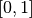
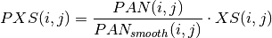
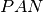
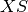
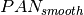
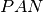
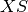
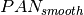

From raw image to calibrated product¶
This section presents various pre-processing tasks that are presented in a standard order to obtain a calibrated, pan-sharpened image.
Optical radiometric calibration¶
In remote sensing imagery, pixel values are referred to as Digital Numbers (DN) and they cannot be physically interpreted or compared. They are influenced by various factors such as the amount of light flowing through the sensor, the gain of the detectors and the analogue to digital converter.
Depending on the season, the light and atmospheric conditions, the position of the sun or the sensor internal parameters, these DN can drastically change for a given pixel (apart from any ground change effects). Moreover, these effects are not uniform over the spectrum: for instance aerosol amount and type has usually more impact on the blue channel.
Therefore, it is necessary to calibrate the pixel values before any physical interpretation is made out of them. In particular, this processing is mandatory before any comparison of pixel spectrum between several images (from the same sensor), and to train a classifier without dependence to the atmospheric conditions at the acquisition time.
Calibrated values are called surface reflectivity, which is a ratio denoting the fraction of light that is reflected by the underlying surface in the given spectral range. As such, its values lie in the range . For convenience, images are often stored in thousandth of reflectivity, so that they can be encoded with an integer type. Two levels of calibration are usually distinguished:
- The first level is called Top Of Atmosphere (TOA) reflectivity. It takes into account the sensor gain, sensor spectral response and the solar illumination.
- The second level is called Top Of Canopy (TOC) reflectivity. In addition to sensor gain and solar illumination, it takes into account the optical thickness of the atmosphere, the atmospheric pressure, the water vapor amount, the ozone amount, as well as the composition and amount of aerosol gasses.
This transformation can be done either with OTB Applications or with Monteverdi . Sensor-related parameters such as gain, date, spectral sensitivity and sensor position are seamlessly read from the image metadata. Atmospheric parameters can be tuned by the user. Supported sensors are:
- Pleiades
- SPOT5
- QuickBird
- Ikonos
- WorldView-1
- WorldView-2
- Formosat
The OpticalCalibration application performs optical calibration. The mandatory parameters are the input and output images. All other parameters are optional. By default the level of calibration is set to TOA (Top Of Atmosphere). The output images are expressed in thousandth of reflectivity using a 16 bits unsigned integer type.
A basic TOA calibration task can be performed with the following command:
otbcli_OpticalCalibration -in input_image -out output_image
A basic TOC calibration task can be performed with the following command:
otbcli_OpticalCalibration -in input_image -out output_image -level toc
Pan-sharpening¶
Because of physical constrains on the sensor design, it is difficult to achieve high spatial and spectral resolution at the same time: a better spatial resolution means a smaller detector, which in turn means lesser optical flow on the detector surface. On the contrary, spectral bands are obtained through filters applied on the detector surface, that lowers the optical flow, so that it is necessary to increase the detector size to achieve an acceptable signal to noise ratio.
For these reasons, many high resolution satellite payload are composed of two sets of detectors, which in turn delivers two different kind of images:
- The multi-spectral (XS) image, composed of 3 to 8 spectral bands containing usually blue, green, red and near infra-red bands at a given resolution (usually from 2.8 meters to 2 meters).
- The panchromatic (PAN) image, which is a grayscale image acquired by a detector covering a wider part of the light spectrum, which allows to increase the optical flow and thus to reduce pixel size. Therefore, resolution of the panchromatic image is usually around 4 times lower than the resolution of the multi-spectral image (from 46 centimeters to 70 centimeters).
It is very frequent that those two images are delivered side by side by data providers. Such a dataset is called a bundle. A very common remote sensing processing is to fuse the panchromatic image with the multi-spectral one so as to get an image combining the spatial resolution of the panchromatic image with the spectral richness of the multi-spectral image. This operation is called pan-sharpening.
This fusion operation requires two different steps:
- The multi-spectral (XS) image is zoomed and registered to the panchromatic image,
- A pixel-by-pixel fusion operator is applied to the co-registered pixels of the multi-spectral and panchromatic image to obtain the fused pixels.
Using either OTB Applications or modules from Monteverdi , it is possible to perform both steps in a row, or step-by-step fusion, as described in the above sections.
The BundleToPerfectSensor application performs both steps in a row. Seamless sensor modelling is used to perform zooming and registration of the multi-spectral image on the panchromatic image. In the case of a Pléiades bundle, a different approach is used: an affine transform is used to zoom the multi-spectral image and apply a residual translation. This translation is computed based on metadata about the geometric processing of the bundle. This zooming and registration of the multi-spectral image over the panchromatic image can also be performed by the Superimpose application.
After the registration step, a simple pan-sharpening is applied, according to the following formula:

Where  and
and  are pixels indices,  is the
panchromatic image,  is the multi-spectral image and
 is the panchromatic image smoothed with a kernel to
fit the multi-spectral image scale.
are pixels indices,  is the
panchromatic image,  is the multi-spectral image and
 is the panchromatic image smoothed with a kernel to
fit the multi-spectral image scale.
Here is a simple example of how to use the BundleToPerfectSensor application:
otbcli_BundleToPerfectSensor -inp pan_image -inxs xs_image -out output_image
There are also optional parameters that can be useful for this tool:
- The
-elevoption specifies the elevation, either with a DEM formatted for OTB (-elev.demoption, see section Digital Elevation Model management) or with an average elevation (-elev.defaultoption). Since registration and zooming of the multi-spectral image is performed using sensor-models, it may happen that the registration is not perfect in case of a landscape with a large variation in elevation. In this case a DEM will allow for a better registration to be achieved. - The
-lmSpacingoption specifies the step of the registration grid between the multi-spectral image and panchromatic image. This is expressed in amount of panchromatic pixels. A lower value gives a more precise registration but implies more computation with the sensor models, and thus increase the computation time. Default value is 10 pixels, which gives sufficient precision in most of the cases. - The
-modeoption selects the registration mode for the multi-spectral image. Thedefaultmode uses the sensor model of each image to create a generic “MS to Pan” transform. Thephrmode uses a simple affine transform (which does not need an elevation source nor a registration grid).
Pan-sharpening is a process that requires a lot of system
resources. The -ram option allows you to limit the amount of memory
available for the computation, and also avoids overloading your computer.
Increasing the available amount of RAM may also result in better
computation time, seems it optimises the use of the system resources.
Default value is 256 Mb.
Figure 5: Pan-sharpened image using Orfeo ToolBox.
Please also note that since registration and zooming of the multi-spectral image with the panchromatic image relies on sensor modelling, this tool will work only for images whose sensor models is available in Orfeo ToolBox (see Section Ortho-rectification and map projections for a detailed list). It will also work with ortho-ready products in cartographic projection.
Digital Elevation Model management¶
A Digital Elevation Model (DEM) is a georeferenced image (or collection of images) where each pixel corresponds to a local elevation. DEMs are useful for tasks involving sensor to ground and ground to sensor coordinate transformations, for example, ortho-rectification (see Section Ortho-rectification and map projections). These transforms need to find the intersection between the line of sight of the sensor and the Earth geoid. If a simple spheroid is used as the Earth model, potentially high localisation errors can be made in areas where elevation is high or perturbed. Of course, DEM accuracy and resolution have a great impact on the precision of these transformations.
The two principal DEMs that are available free of charges, and with worldwide cover, are both delivered as 1 degree by 1 degree tiles. They are:
- The Shuttle Radar topographic Mission (SRTM) is a DEM with a resolution of 90 metres, obtained by radar interferometry during a campaign of the Endeavour space shuttle from NASA in 2000.
- The Advanced Spaceborne Thermal Emission and Reflection Radiometer (ASTER) is a DEM with a resolution of 30 metres obtained by stereoscopic processing of the archive of the ASTER instrument.
The Orfeo ToolBox relies on OSSIM capabilities for sensor modelling and DEM handling. Tiles of a given DEM are supposed to be located within a single directory. General elevation support is also supported from GeoTIFF files.
Whenever an application or Monteverdi module requires a DEM, the option elev.dem sets the DEM directory. This directory must contain the DEM tiles, either in DTED or SRTM format or as a GeoTIFF. Subdirectories are not supported.
Depending on the reference of the elevation, you also need to use a geoid to accurately manage the elevation. For this, you need to specify a path to a file which contains the geoid. Geoid corresponds to the equipotential surface that would coincide with the mean ocean surface of the Earth.
We provide one geoid in the OTB-Data repository.
In all applications, the option elev.geoid manages the path to the geoid. Finally, it is also possible to use an average elevation in case no DEM is available by using the elev.default option.
Ortho-rectification and map projections¶
There are several level of products available on the remote sensing imagery market. The most basic level often provide the geometry of acquisition (sometimes called the raw geometry). In this case, pixel coordinates can not be directly used as geographical positions. For most sensors (but not for all), the different lines corresponds to different acquisition times and thus different sensor positions, and different rows correspond to different cells of the detector.
The mapping of a raw image so as to be registered to a cartographic grid is called ortho-rectification, and consist in inverting the following effects (at least):
- In most cases, lines are orthogonal to the sensor trajectory, which is not exactly (and in some case not at all) following a north-south axis,
- Depending on the sensor, the line of sight may be different from a Nadir (ground position of the sensor), and thus a projective warping may appear,
- The variation of height in the landscape may result in severe warping of the image.
Moreover, depending on the area of the world the image has been acquired on, different map projections should be used.
The ortho-rectification process is as follows: once an appropriate map projection has been defined, a localisation grid is computed to map pixels from the raw image to the ortho-rectified one. Pixels from the raw image are then interpolated according to this grid in order to fill the ortho-rectified pixels.
Ortho-rectification can be performed either with OTB Applications or Monteverdi . Sensor parameters and image meta-data are seamlessly read from the image files without needing any user interaction, provided that all auxiliary files are available. The sensor for which Orfeo ToolBox supports ortho-rectification of raw products are the following:
- Pleiades
- SPOT5
- Ikonos
- Quickbird
- GeoEye
- WorldView
In addition, GeoTiff and other file format with geographical information are seamlessly read by Orfeo ToolBox , and the ortho-rectification tools can be used to re-sample these images in another map projection.
Beware of “ortho-ready” products¶
There are some image products, called “ortho-ready”, that should be processed carefully. They are actual products in raw geometry, but their metadata also contains projection data:
- a map projection
- a physical origin
- a physical spacing
- and sometimes an orientation angle
The purpose of this projection information is to give an approximate map projection to a raw product. It allows you to display the raw image in a GIS viewer at the (almost) right location, without having to reproject it. Obviously, this map projection is not as accurate as the sensor parameters of the raw geometry. In addition, the impact of the elevation model can’t be observed if the map projection is used. In order to perform an ortho-rectification on this type of product, the map projection has to be hidden from Orfeo ToolBox .
You can see if a product is an “ortho-ready” product by using gdalinfo or
OTB ReadImageInfo application.
Check if your product verifies following two conditions:
- The product is in raw geometry: you should expect the presence of RPC coefficients and a non-empty OSSIM keywordlist.
- The product has a map projection: you should see a projection name with physical origin and spacing.
In that case, you can hide the map projection from the Orfeo ToolBox by using extended filenames. Instead of using the plain input image path, you append a specific key at the end:
"path_to_image?&skipcarto=true"
The double quote can be necessary for a successful parsing. More details about the extended filenames can be found in the Extended filenames section.
Ortho-rectification with OTB Applications¶
The OrthoRectification application performs ortho-rectification and map re-projection. The simplest way to use it is the following command:
otbcli_OrthoRectification -io.in input_image -io.out output_image
In this case, the tool will automatically estimates all the necessary parameters:
- The map projection is set to UTM (a worldwide map projection) and the UTM zone is automatically estimated,
- The ground sampling distance of the output image is computed to fit the image resolution,
- The region of interest (upper-left corner and size of the image) is estimated so as to contain the whole input image extent.
In order to use a Digital Elevation Model to improve the locational accuracy, one can pass the directory containing the DEM tiles to the application as follows. Further information regarding the use of DEMs can be found in Section Digital Elevation Model management.
otbcli_OrthoRectification -io.in input_image
-io.out output_image
-elev.dem dem_dir
If one wants to use a different map projection, the -map option may be used (example with lambert93 map projection):
otbcli_OrthoRectification -io.in input_image
-io.out output_image
-elev.dem dem_dir
-map lambert93
Map projections handled by the application are the following (please note that the ellipsoid is always WGS84):
- UTM:
-map utm| The UTM zone and hemisphere can be set by the options-map.utm.zoneand-map.utm.northhem. Lambert 2 etendu:
-map lambert2Lambert 93:
-map lambert93- TransMercator:
-map transmercator| The related parameters (false easting, false northing and scale factor) can be set by the options-map.transmercator.falseeasting,-map.transmercator.falsenorthingand-map.transmercator.scale WGS:
-map wgs- Any map projection system with an EPSG code:
-map epsg| The EPSG code is set with the option-map.epsg.code
The group outputs contains parameters to set the origin, size and
spacing of the output image. For instance, the ground spacing can be
specified as follows:
otbcli_OrthoRectification -io.in input_image
-io.out output_image
-elev.dem dem_dir
-map lambert93
-outputs.spacingx spx
-outputs.spacingy spy
Please note that since the y axis of the image is bottom oriented, the y spacing should be negative to avoid switching north and south direction.
A user-defined region of interest to ortho-rectify can be specified as follows:
otbcli_OrthoRectification -io.in input_image
-io.out output_image
-elev.dem dem_dir
-map lambert93
-outputs.spacingx spx
-outputs.spacingy spy
-outputs.ulx ul_x_coord
-outputs.uly ul_y_coord
-outputs.sizex x_size
-outputs.sizey y_size
Where the -outputs.ulx and -outputs.uly options specify
the coordinates of the upper-left corner of the output image, while the options:
-outputs.sizex and -outputs.sizey specify the
size of the output image.
A few more interesting options are available:
- The
-opt.rpcoption uses an estimated RPC model instead of the rigorous SPOT5 model, which speeds-up the processing, - The
-opt.gridspacingoption defines the spacing of the localisation grid used for ortho-rectification. A coarser grid results in speeding-up the processing, but with potential loss of accuracy. A standard value would be 10 times the ground spacing of the output image. - The
-interpolatoroption changes the interpolation algorithm between nearest neighbor, linear and bicubic. Default is nearest neighbor interpolation, but bicubic should be fine in most cases. - The
-opt.ramoption specifies the amount of memory available for the processing (in Mb), with a default value of 256 Mb. Increasing this value to fit the available memory on your computer can speed-up the processing.